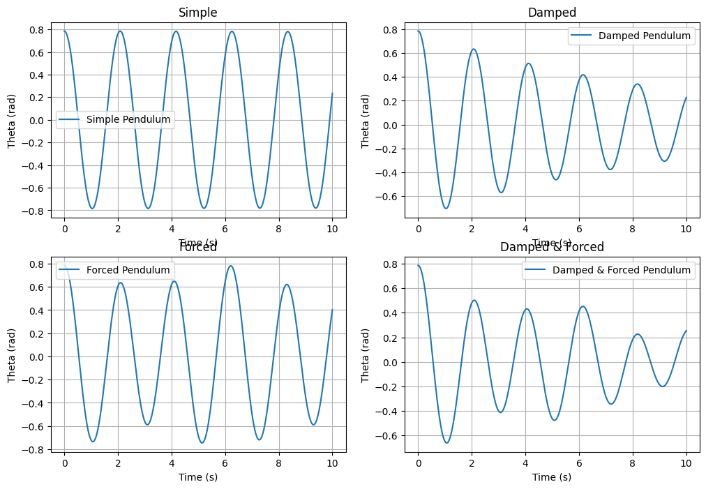
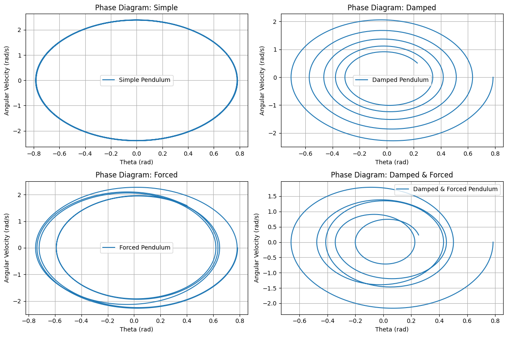
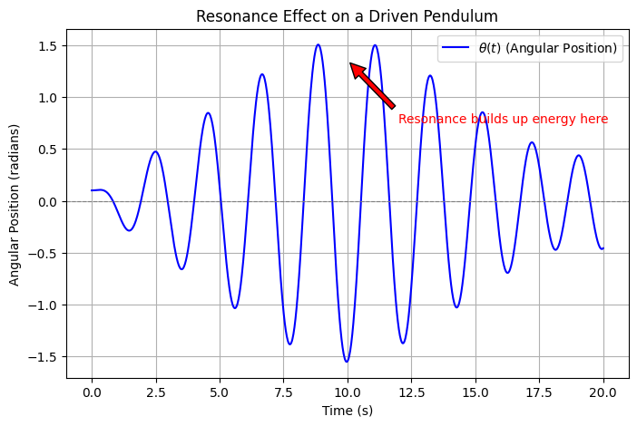
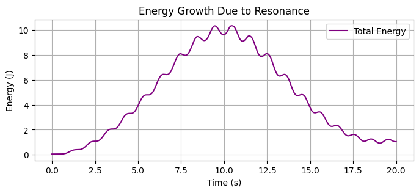
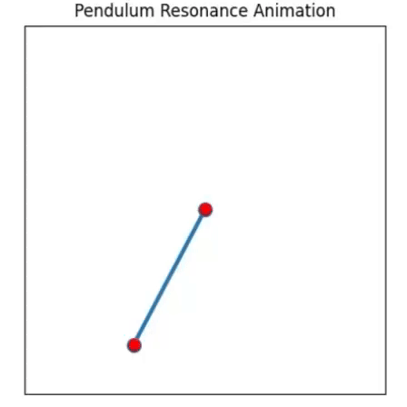
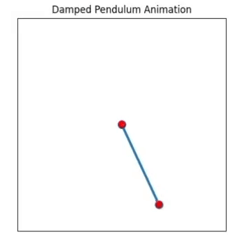
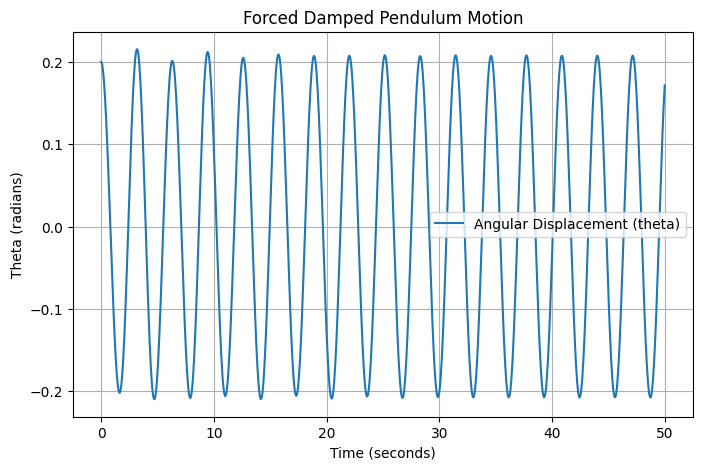

Theoretical Foundation: Forced Damped Pendulum
Equation of Motion
The equation governing the motion of a forced damped pendulum is given by:
where: - \(\theta\) is the angular displacement, - \(b\) is the damping coefficient, - \(g\) is the acceleration due to gravity, - \(L\) is the length of the pendulum, - \(A\) is the amplitude of the external force, - \(\omega\) is the driving frequency.
📌 Explanation of the Equation
This equation describes the motion of a pendulum that experiences friction (damping) and is influenced by an external periodic force.
📘 Breakdown of Each Term
1️⃣ Acceleration Term:
- \(\frac{d^2\theta}{dt^2}\) → Represents the angular acceleration of the pendulum.
2️⃣ Damping (Friction) Term:
- \(b\frac{d\theta}{dt}\) → Represents energy loss due to friction or air resistance.
- If \(b\) is large → The motion decays quickly (stops fast).
- If \(b\) is small → The pendulum continues oscillating for a long time.
3️⃣ Gravitational Force Term:
- \(\frac{g}{L} \sin\theta\) → Represents the natural oscillation of the pendulum due to gravity.
4️⃣ External Force (Driving) Term:
- \(A\cos(\omega t)\) → Represents the external periodic force applied to the pendulum (e.g., a motor or external push).
- If \(A\) is large → The pendulum swings more due to stronger external force.
- If \(\omega\) matches the natural frequency → Resonance occurs, leading to very large oscillations.

-
The blue dashed line shows the external force applied to the pendulum, represented by \(A \cos(\omega t)\).
-
The red dotted line shows the damping effect, which represents the energy lost due to friction.
-
The green line shows the gravitational force that naturally pulls the pendulum back due to gravity.
Small-Angle Approximation
For small oscillations, we make an approximation:
- Small-Angle Approximation: If the oscillations are small, we mathematically approximate \(\sin \theta \approx \theta\). This simplifies the equation.
The equation of motion for a simple pendulum is given by:
Applying the small-angle approximation (\(\sin \theta \approx \theta\)):
This results in a linear differential equation, which describes simple harmonic motion. This simplified equation is a second-order differential equation, and its solution consists of two parts:
1️⃣ Natural Oscillation (Homogeneous Solution)
This represents the motion of the pendulum without any external force, only due to its natural movement. This solution determines how quickly or slowly the pendulum stops:
- Overdamped: The motion stops slowly.
- Critically damped: The motion stops as quickly as possible.
- Underdamped: The motion continues oscillating slowly, with decreasing amplitude.
2️⃣ Forced Oscillation (Particular Solution)
This part shows how an external force (like a motor pushing the pendulum) affects the motion. This external force causes the pendulum to oscillate regularly and continuously.
- As a result: The pendulum both performs its natural motion (oscillation) and continues with the motion influenced by the external force. When the frequency of the external force matches the natural frequency of the pendulum, large oscillations occur (this is called resonance).


- The blue line represents the natural oscillation, which gradually decreases over time due to damping.
- The green line shows the forced oscillation, which is driven by an external force and continues regularly.
Resonance Condition
What is Resonance?
When an external force is applied to a system at a frequency equal to or very close to its natural frequency (ω₀), resonance occurs. In this case, the system reaches maximum amplitude (Θ₀) and undergoes large oscillations.
Natural Frequency (ω₀):
For a simple pendulum, the natural frequency is given by:
Where:
- g → Acceleration due to gravity
- L → Length of the pendulum
Importance of Resonance:
Resonance is a crucial concept in engineering. If the resonance frequency of a structure is miscalculated, external forces can cause large oscillations, leading to structural failure or damage.
- Vibration Control: Bridges, buildings, or machines can suffer destructive consequences if they enter resonance.
- Avoiding Mechanical Resonance: Systems such as engines, airplanes, and ships are specially designed to minimize vibrations caused by resonance.
Summary:
-
Resonance causes a system to undergo large oscillations when an external force interacts with the system at a frequency close to its natural frequency.
-
This leads to energy accumulation, resulting in an increase in the amplitude of the oscillations.



2. Analysis of Dynamics
We investigate how damping (\(b\)), driving amplitude (\(A\)), and frequency (\(\omega\)) influence the motion:
- Low damping: The system exhibits sustained oscillations.
- High damping: Motion quickly dies out.
- Resonance: Maximum amplitude is observed at a specific \(\omega\).
- Chaotic motion: At certain parameter ranges, the system transitions into chaotic behavior.

3. Practical Applications
- Energy Harvesting: Used in piezoelectric generators.
- Suspension Bridges: Understanding oscillations helps prevent failures (e.g., Tacoma Narrows Bridge collapse).
- RLC Circuits: Analogous behavior in driven electrical oscillators.
4. Implementation: Python Simulation
Below is a Python script that numerically solves the differential equation using the Runge-Kutta method and visualizes the motion.
